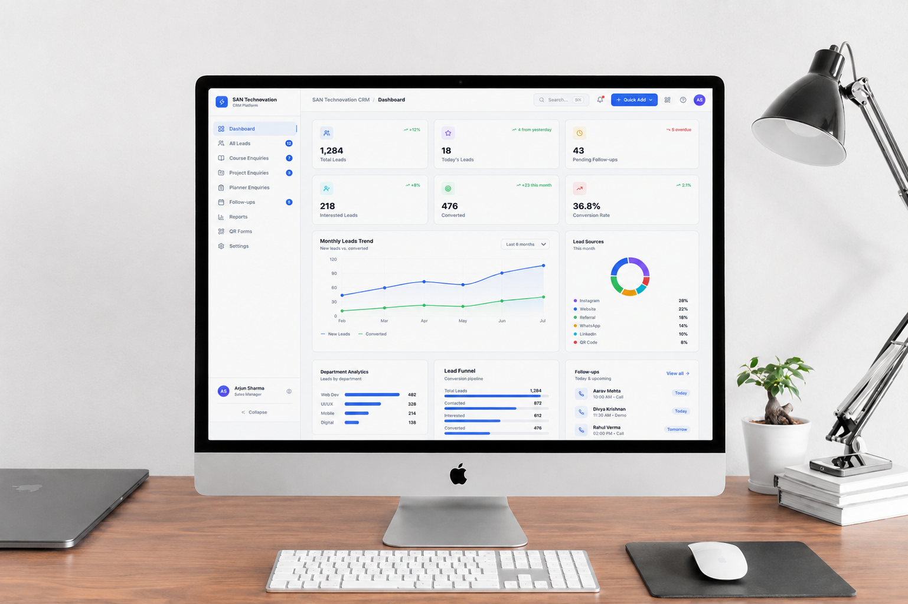

A data-driven CRM dashboard designed with AI-assisted workflows, focusing on clarity, usability, and efficient interface structuring for everyday business operations.

Created a data-driven CRM dashboard using AI-assisted workflows. The focus was on clarity, usability, and efficient interface structuring so teams can manage contacts, pipelines, and activity without cognitive overload.
CRM interfaces often become cluttered with dense tables and scattered actions. Users need a clear hierarchy, scannable data, and predictable patterns to work quickly and confidently.
Structured approach from insight to interface
Understand CRM user workflows
Goals, metrics & IA
Layout options & hierarchy
AI-assisted high-fidelity UI
Clarity & usability review